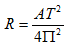

Now that we have a good idea of the nuts and bolts that make up spreadsheet programs, it is time to turn our attention to the question of how spreadsheets can be used to solve “real-world” problems. As mentioned above, one of the primary uses of spreadsheets is to answer “what if” type questions. One such question that all undergraduates are interested in is “What will be my grade be if I make X on the final?” Let’s construct a spreadsheet to help answer this question.
The first thing we need to know in order to create a spreadsheet is what the input data will be, what outputs are expected, and what mathematical relationships will exist between the inputs and the outputs. For the problem of computing a course average, we know, in general, that the inputs will be exam and homework grades and that the output will be the final average. The relationships that exist between these inputs and outputs are usually specified by the instructor’s grading policy. Here is a grading policy similar to the one I use in my artificial intelligence course:
- There will be three exams given this quarter. Exams one and two will each be worth 20% of your final course grade. Exam three will be worth 30%. Homework will be worth a total of 30% of your final course grade. Four homework assignments will be given this quarter. All exams are graded on the 100 point scale. Homeworks will be graded on a 20 point scale.
From this grading policy we can see that there will be exactly four homework grades and three exams. To begin constructing the spreadsheet, let’s have one column for homework grades and one column for exam grades. If we select column B for the homework and column D for exams, we might want to label the columns; say, by placing the text string “Homeworks” in cell B2 and “Exams” in cell D2. We can now place our homework scores in cells B4, B5, B6, and B7. Exam grades could be stored in cells D4, D5, and D6.
Remember that there is nothing special about this particular arrangement of the data. I simply thought that grouping the grades into columns would make the information easier to read. I also chose to leave blank spaces between the columns to improve readability.
Now that we have decided where the inputs should go, we can begin to think about computing the averages. Instead of trying to come up with a complex formula that directly computes the course average, let’s address the task in stages, first computing a homework average, then an exam average, and finally a course average.
The homework average can be computed either by using the built-in “average” function or by directly specifying the formula = (B4+B5+B6+B7)/4. The exam average cannot be computed in such a straightforward manner due to the fact that all exams are not weighted equally. Exams 1 and 2 are each 20% of the final grade, while Exam 3 is 30%. Hence, all three exams together make up only 70% of the overall grade. These relationships can be captured by the following formula: = (.2*D4+.2*D5+.3*D6) / .7 which expresses the exam average using the 100 point scale. Each of the exam grades is multiplied by its appropriate weight and summed giving the number of points earned from exams. This value is then divided by 0.7, since the total number of points earnable on exams is 70% of total possible points. For convenience sake, I’ve placed the formula for computing the homework average in cell B9 and the formula for computing the exam average in cell D9.
[Note Cell D9 holds the formula = (.2*D4 + .2*D5 + .3*D6) / .7> ]
(a) Actual cell contents
(b) Displayed values
A spreadsheet for computing an individual student’s course average
Now that the homework and exam averages have been computed, we can work on combining them to produce the overall class average. Unfortunately, we cannot simply add the two averages together and divide by two. The homework average is expressed on a 20-point scale and is worth 30% of the final grade. The exam average is expressed on the 100-point scale and is worth 70% of the final grade.
One approach is to next determine how many of the total points of the final grade will be contributed by homework and how many by exams. The number of points contributed by the homework average is given by = B9 / 20 * 30, since B9/20 is the percentage of homework points earned and 30 is the total number of points homework is worth (on the 100 point scale). Similarly, the number of points contributed by the exam average is: = D9 / 100 * 70, since D9/100 is the percentage of exam points earned and 70 is the total number of points exams are worth (again, on the 100 point scale)[14]. Storing the points earned directly under the averages can be accomplished by placing the formula for homework points in cell B10 and the formula for exam points in cell D10. Finally, the course average can be computed by adding together the points earned on homework with the points earn on exams: = B10+D10.
shows the completed spreadsheet with perfect scores for each of the homework and exam grades. Additional titles have been added to improve readability, such as “Averages” in cell A9, “Points earned” in cell A10 and “Final score” in cell A12. Scale indicators were also added in cells C9 and E9. These are text strings of the form: “/20” and “/100”.
Now that the spreadsheet formulas have been set up it easy to play the “What will my grade be if...” game. Simply enter the grades you have made on exams and homeworks that have already been returned and “guesstimate” your grades on the remaining exams and homeworks.
Hopefully, this example has given you some insight into the process of constructing a spreadsheet to solve a useful problem. The following exercises provide an opportunity for you to try your hand at a number of different problems. As is the case with most tools, your proficiency at solving problems with spreadsheets will improve with practice.
Exercises for
Access to a spreadsheet program is required in order to solve the following problems. You may use either a commercially available spreadsheet program, such as Microsoft Excel or you may use the Watson spreadsheet lab, which is included with this text and is also available on the web at http://watson.latech.edu.
-
In 2002, a reasonably priced personal computer had 256 Megabytes of main memory and a processing speed of 2 billion instructions per second. Assume that the memory size and processing speed of computers double every 18 months (quadruple ever three years). Construct a table showing the memory size and processing speed of computers for 2002, 2005, 2008, 2011, 2014, 2017, and 2020. Try to build this table in the most efficient way you can think of.
-
In many countries, speed limits are posted in KPH (kilometers per hour) rather than MPH (miles per hour). Construct a table showing speeds from 25 miles per hour to 95 miles per hour (in 10 mile per hour increments) and the equivalent speed in KPH. One mile per hour is equal to 1.61 kilometers per hour. Try to build this table in the most efficient way you can think of.
-
In many countries, temperatures are measured on the Celsius scale rather than the Fahrenheit scale. Construct a conversion chart showing temperatures from 0 degrees Celsius to 75 degrees Celsius (in 5 degree increments) and the equivalent Fahrenheit reading. Note that 0 degrees Celsius is equal to 32 degrees Fahrenheit and that 100 degrees Celsius is equal to 212 degrees Fahrenheit.
-
Suppose you are a member of a long-range planning team at NASA. Your team is looking into the feasibility of constructing a wheel-shaped space station that would spin to simulate Earth-normal gravity. Both the size of the station and its rate of spin affect the “artificial gravity” on the station. The underlying physics equation describing this relationship is:

- Where:
- A is acceleration, expressed in feet per second per second
- R is the radius of the station, expressed in feet
- T is the period of rotation, expressed in seconds per revolution
- Π is 3.14159
Construct a table showing the radius, R, needed in order to have acceleration equal to that produced by Earth-normal gravity, in a wheel-shaped space station that rotates, T, once in 10 seconds, 20 seconds, 30 seconds, … , 60 seconds. Acceleration due to gravity on the surface of the Earth, A, is 32 feet per second per second.
The particular version of the above formula that you need to solve for is:

-
The reliability of a new experimental rocket is estimated to be 95%. Construct a table showing the likelihood of an accident occurring during one or more of its first 8 launches.
Likelihood of success over all N trials is calculated as:
reliability on one launch attemptN
Likelihood of one or more failures is simply:
1 - likelihood of success.
Footnotes
[14] Alternatively, the number of total points contributed by the exams could be directly computed from the raw exam scores and the relative weights of each ( i.e., = .2*D4 + .2 *D5 + .3 * D6 ). If this approach were used to compute the value of D10, then the exam average computation in cell D9 could be simplified to = D10 / .7.